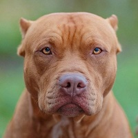
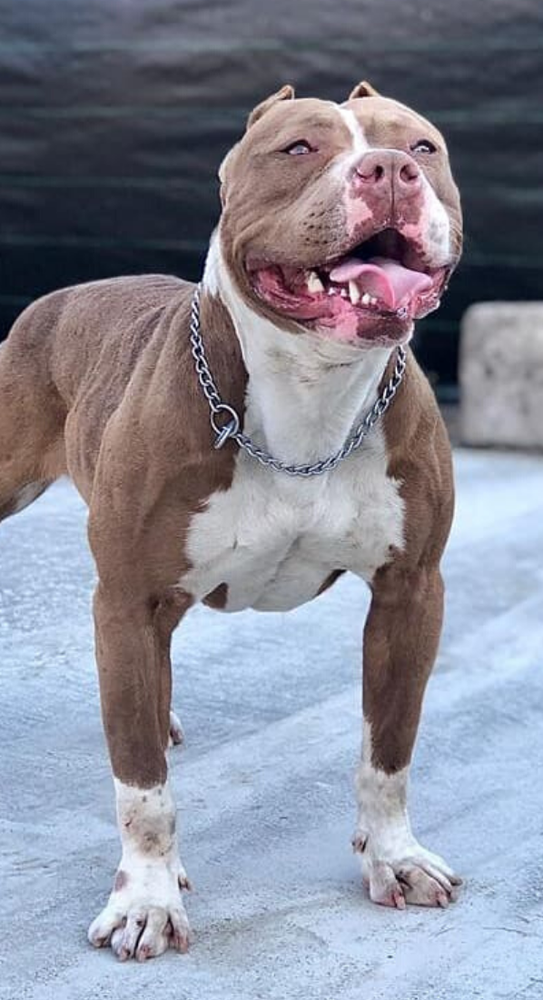
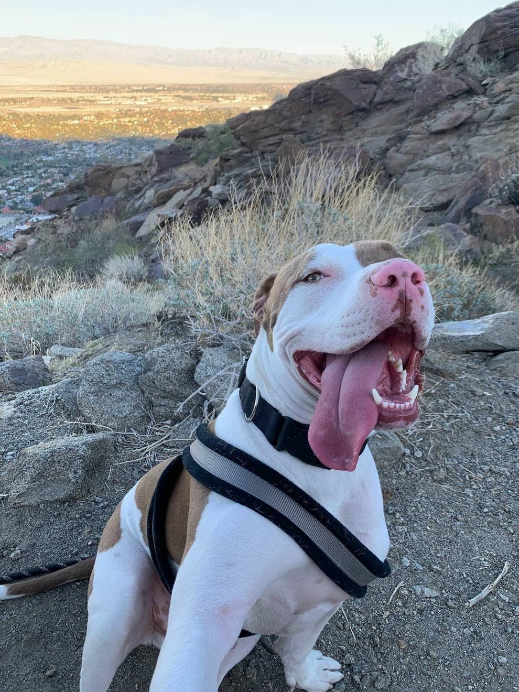
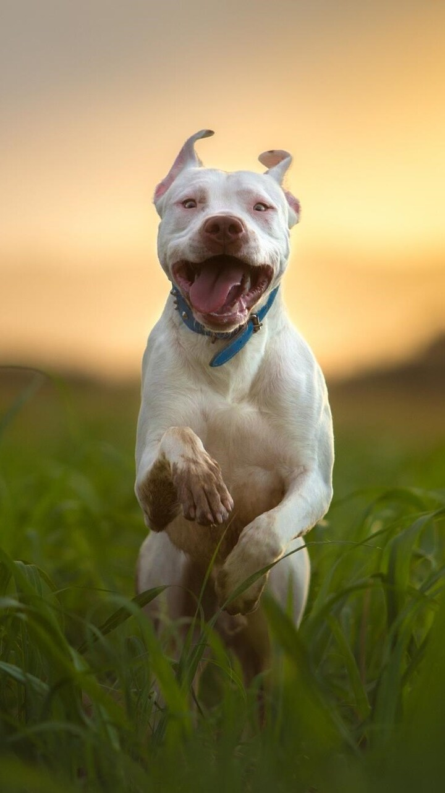
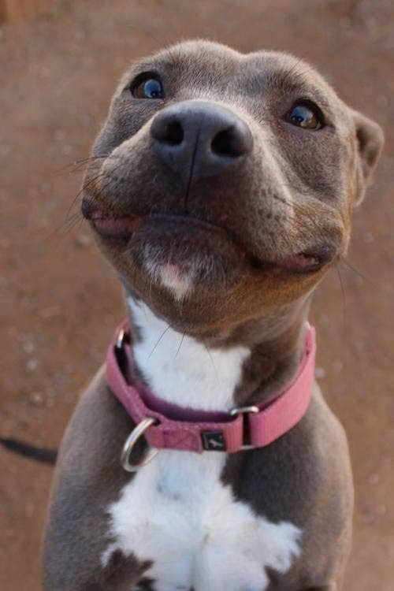
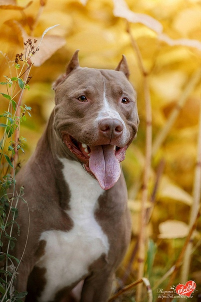
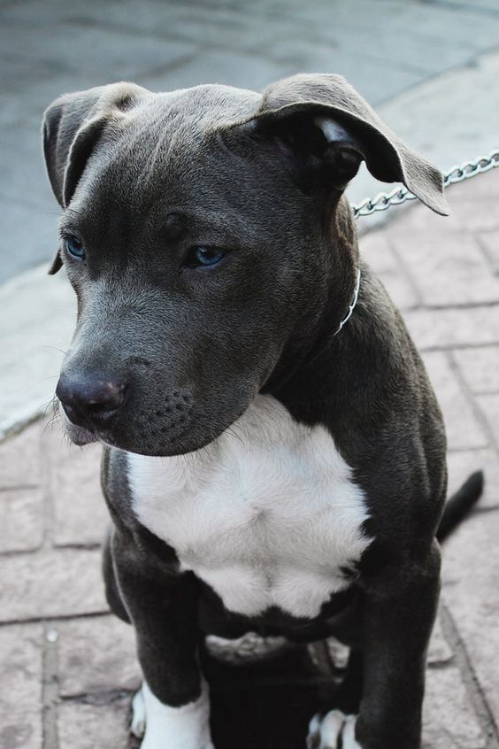

Питбуль

Оценка породы:
Ум
Линька
Популярность
Охранные качества
Игровая активность
Сторожевые качества
Дружелюбность к детям
Склонность к дрессировке
Характеристика породы
Краткое описание
Условия содержания:
Частный дом, квартира
Длина шерсти:
Короткая
Размер взрослой собаки:
Рост самцов 40 – 42 см, самок – 37 – 40 см,
вес самца 15,9 кг – 37,2 кг, самки 13,6кг – 22,7кг.
вес самца 15,9 кг – 37,2 кг, самки 13,6кг – 22,7кг.
Средняя продолжительность жизни:
12-15 лет
Выгул:
2 раза в день, один должен продолжаться хотя бы час
Потребность в физической нагрузке:
Средняя, 1-3 часа в день
Стоимость щенка:
от 7000 до 60000 рублей
Фото взрослой собаки






Особенности характера и поведения
Многие считают что питбули – это злобные, враждебные собаки. В особенности принимая во внимание историю их происхождения. Но так ли это? Вся агрессия и злоба породы направлена на животных. Питбули отлично живут с людьми, также, когда хозяин рядом они дружелюбны с незнакомцами.
В собаке можно воспитать и агрессию. Для этого требуется соответствующее обучение, которое предоставляется на полигонах.
Определенным методом можно привить злость любой породе.
Питбули отлично подчиняются воспитанию, преодолевают физические нагрузки. Их нужно дрессировать с детства. Собакой необходимо заниматься, гулять с ней. Им нравится купаться в водоемах.
Достоинства
К достоинствам породы относятся:
Не нужно долго мыть и вычесывать.
Продукты питания простые, без изысков.
Быстро обучается, может стать настоящим товарищем и защитником семьи.
Жизнерадостный и активный.
Болеет крайне редко.
Собака для сильного, разумного человека, который нуждается в друге.
Недостатки
Из недостатков можно выделить:
Процесс воспитания непрост, требует времени, силы и стремления.
Агрессивность породы и охотничий инстинкт при ненадлежащем воспитании может стать угрожающим для людей.
Собака имеет потребность в общении и внимании.
Возможна гиперреакция животного на пищу и другие вещества.
Данная порода нередко подвергается дисплазии со стороны тазобедренного сустава, гипотиреозу.
Склонны к сердечно-сосудистым болезням (к примеру, стеноз аорты).
Уход и содержание
Питбуль – домашняя собака. У животного нет подшерстка, поэтому на улице не выживет.
В квартире или доме проблем не возникает, главное регулярно выгуливать и занимать собаку физическими упражнениями,
чтобы дома питомец не наносил вред имуществу от скуки.
В жаркое время года питомца нужно оберегать от попадания прямых солнечных лучей, чтобы животное не получило солнечный удар.
Шерсть необходимо обрабатывать специальной щеткой 1-2 раза в неделю.
В основном питбули стачивают когти самостоятельно на прогулке.
Но если этого не случается, то рекомендуется их стричь специальными когтерезами.
Уши нужно постоянно осматривать, чистить по мере загрязнения.
Питание
Ежедневное питание щенка должно быть достаточно калорийным по 4-5 раза за день.
Рекомендуется следовать правилам:
Давать еду в одинаковое время;
Кормить с одной посуды;
Следить за чистотой воды, она должна быть свежей.
В питании могут присутствовать собачьи консервы и сухие корма. Но давать такую еду нужно с осторожностью,
так как у собаки может появиться аллергия на определенный элемент искусственного корма.
Здоровье
У этой породы преимущественно нет трудностей в плане здоровья.
Американские питбультерьеры предрасположены к некоторым заболеваниям.
Не у всех из них могут возникнуть эти болезни, но важно знать о них тем, кто собирается содержать данную породу.
Аллергия. Может быть на блох, пыль, пыльцу растений. Пищевая аллергия случается реже на такие продукты:
кукуруза, рис, говядина, пшеница. Аллергия на еду может спровоцировать чесание и неприятные ощущения.
Дисплазия тазобедренного сустава. Может приносить сильную боль в зависимости от тяжести.
Гипотиреоз – это дисфункция щитовидной железы, которая порождает набор веса, ухудшение шерсти.
В основном возникает у собак среднего возраста и может регулироваться повседневным употреблением лекарств.
Заболевания сердца. Этим собакам свойственны врожденные пороки сердца.
Но многие из них не выражают никаких симптомов болезни.
Выгул
Ежедневные прогулки должны продолжаться не меньше часа.
Эти питомцы энергичны и с наслаждением будут участвовать в играх.
Они отлично реагируют на физические нагрузки, дрессировку и прогулки на велосипедах.
Питбультерьер при нехватке физической активности начнет томиться и грустить.
Это выразится на погрызенных вещах в доме.
Представителей данной породы необходимо выгуливать на поводке!
Важно учитывать возможную агрессию к другим животным!
Показывать питомцу внешний мир нужно начинать как можно раньше.
Необходимо водить щенка по разным местам, знакомить с людьми и животными.
Уход за шерстью
У питбулей короткая шерсть, поэтому она не нуждается в особенном уходе.
Достаточно расчесывать питомца 1 раз на семь дней.
В период линьки стоит использовать фурминатор для собак с короткой шерстью.
Видео о породе